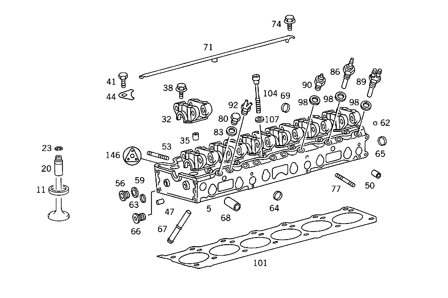

| № | Артикул | Название | Кол. | Примечание | Ограничение |
|---|---|---|---|---|---|
| 5 | A 103 010 43 20 | ГБЦ | 1 | ||
| 11 | A 103 053 14 31 | - КОЛЬЦО СЕДЛА КЛАПАНА | - | ||
| 11 | A 103 053 27 31 | - Кольцо седла клапана | 6 | ВПУСК, НОРМАЛЬН. 45.60 MM | |
| 11 | A 103 053 16 31 | - Кольцо седла клапана | 6 | ВПУСК, РЕМОНТ. ИСПОЛНЕНИЕ 46.80 MM | |
| 11 | A 103 053 19 32 | - Кольцо седла клапана | 6 | ВЫПУСК, НОРМАЛ. 41.60 MM | |
| 11 | A 103 053 21 32 | - Кольцо седла клапана | 6 | ВЫПУСК, РЕМОНТ. ИСПОЛНЕНИЕ 42.80 MM | |
| 20 | A 103 050 03 24 | - НАПРАВЛЯЮЩАЯ КЛАПАНА | - | [414] СТАРУЮ ДЕТАЛЬ УСТАНАВЛИВАТЬ БОЛЬШЕ НЕ РАЗРЕШАЕТСЯ | |
| 20 | A 103 050 22 24 | - Направляющая клапана | 6 | ВПУСК, НОРМАЛЬН. РАЗМЕР I 14,05 MM | |
| 20 | A 103 050 04 24 | - НАПРАВЛЯЮЩАЯ КЛАПАНА | - | [414] СТАРУЮ ДЕТАЛЬ УСТАНАВЛИВАТЬ БОЛЬШЕ НЕ РАЗРЕШАЕТСЯ | |
| 20 | A 103 050 23 24 | - Направляющая клапана | 6 | ВПУСК, РЕМОНТНЫЙ РАЗМЕР I 14.20 MM | |
| 20 | A 103 050 05 24 | - НАПРАВЛЯЮЩАЯ КЛАПАНА | - | [414] СТАРУЮ ДЕТАЛЬ УСТАНАВЛИВАТЬ БОЛЬШЕ НЕ РАЗРЕШАЕТСЯ | |
| 20 | A 103 050 24 24 | - Направляющая клапана | 6 | ВПУСК, РЕМОНТНЫЙ РАЗМЕР II 14.40 MM | |
| 20 | A 103 050 07 24 | - НАПРАВЛЯЮЩАЯ КЛАПАНА | - | [414] СТАРУЮ ДЕТАЛЬ УСТАНАВЛИВАТЬ БОЛЬШЕ НЕ РАЗРЕШАЕТСЯ | |
| 20 | A 103 050 27 24 | - Направляющая клапана | 6 | ВЫПУСК, НОРМАЛЬН. РАЗМЕР I 14.05 MM | |
| 20 | A 103 050 08 24 | - НАПРАВЛЯЮЩАЯ КЛАПАНА | - | [414] СТАРУЮ ДЕТАЛЬ УСТАНАВЛИВАТЬ БОЛЬШЕ НЕ РАЗРЕШАЕТСЯ | |
| 20 | A 103 050 28 24 | - Направляющая клапана | 6 | ВЫПУСК, РЕМОНТНЫЙ РАЗМЕР I 14.20 MM | |
| 20 | A 103 050 09 24 | - НАПРАВЛЯЮЩАЯ КЛАПАНА | - | [414] СТАРУЮ ДЕТАЛЬ УСТАНАВЛИВАТЬ БОЛЬШЕ НЕ РАЗРЕШАЕТСЯ | |
| 20 | A 103 050 29 24 | - Направляющая клапана | 6 | ВЫПУСК, РЕМОНТНЫЙ РАЗМЕР II 14.40 MM | |
| 23 | N 009045 014000 | - Пруж. стопорное кольцо | 12 | ||
| 32 | A 103 051 28 02 | - ПОДШИПНИК РАСПРЕДВАЛА | - | [006] ИСПОЛЬЗОВАТЬ СТАРЫЙ НОМЕР ДЕТАЛИ ДО ДВИГАТЕЛЯ 940 10/50,20/60 001673 940 12/52,22/62 001696 941 10/50,20/60 000203 941 12/52,22/62 000811 981 10/50,20/60 000478 981 12/52,22/62 003336 982 10/50,20/60 000153 982 12/52,22/62 000796 983 10/50,20/60 001900 983 12/52,22/62 010226 | |
| 32 | A 103 051 02 10 | - Подшипник распредвала | 1 | НОРМ. I,СПЕРЕДИ | |
| 32 | A 103 051 30 02 | - ПОДШИПНИК РАСПРЕДВАЛА | - | [006] ИСПОЛЬЗОВАТЬ СТАРЫЙ НОМЕР ДЕТАЛИ ДО ДВИГАТЕЛЯ 940 10/50,20/60 001673 940 12/52,22/62 001696 941 10/50,20/60 000203 941 12/52,22/62 000811 981 10/50,20/60 000478 981 12/52,22/62 003336 982 10/50,20/60 000153 982 12/52,22/62 000796 983 10/50,20/60 001900 983 12/52,22/62 010226 | |
| 32 | A 103 051 04 10 | - ПОДШИПНИК РАСПРЕДВАЛА | 1 | СПЕРЕДИ,РЕМ.ГРУППА II | |
| 32 | A 103 051 19 02 | - ПОДШИПНИК РАСПРЕДВАЛА | - | [006] ИСПОЛЬЗОВАТЬ СТАРЫЙ НОМЕР ДЕТАЛИ ДО ДВИГАТЕЛЯ 940 10/50,20/60 001673 940 12/52,22/62 001696 941 10/50,20/60 000203 941 12/52,22/62 000811 981 10/50,20/60 000478 981 12/52,22/62 003336 982 10/50,20/60 000153 982 12/52,22/62 000796 983 10/50,20/60 001900 983 12/52,22/62 010226 | |
| 32 | A 103 051 07 10 | - Подшипник распредвала | 4 | NORMAL I NR 2,4,5,6 [402] БОЛЬШЕ НЕ ПОСТАВЛЯЕТСЯ | |
| 32 | A 103 051 21 02 | - ПОДШИПНИК РАСПРЕДВАЛА | - | [006] ИСПОЛЬЗОВАТЬ СТАРЫЙ НОМЕР ДЕТАЛИ ДО ДВИГАТЕЛЯ 940 10/50,20/60 001673 940 12/52,22/62 001696 941 10/50,20/60 000203 941 12/52,22/62 000811 981 10/50,20/60 000478 981 12/52,22/62 003336 982 10/50,20/60 000153 982 12/52,22/62 000796 983 10/50,20/60 001900 983 12/52,22/62 010226 | |
| 32 | A 103 051 09 10 | - Подшипник распредвала | 4 | РЕМОНТНАЯ ГРУППА II NR 2,4,5,6 | |
| 32 | A 103 051 23 02 | - ПОДШИПНИК РАСПРЕДВАЛА | - | [006] ИСПОЛЬЗОВАТЬ СТАРЫЙ НОМЕР ДЕТАЛИ ДО ДВИГАТЕЛЯ 940 10/50,20/60 001673 940 12/52,22/62 001696 941 10/50,20/60 000203 941 12/52,22/62 000811 981 10/50,20/60 000478 981 12/52,22/62 003336 982 10/50,20/60 000153 982 12/52,22/62 000796 983 10/50,20/60 001900 983 12/52,22/62 010226 | |
| 32 | A 103 051 11 10 | - ПОДШИПНИК РАСПРЕДВАЛА | 1 | ПОДВОД МАСЛА,НОРМАЛЬН. I NR 3 [417] БОЛЬШЕ НЕ ПОСТАВЛЯЕТСЯ, ЗАКАЗЫВАТЬ КОМПЛЕКТ ПОСТАВКИ | |
| 32 | A 103 051 25 02 | - ПОДШИПНИК РАСПРЕДВАЛА | - | [006] ИСПОЛЬЗОВАТЬ СТАРЫЙ НОМЕР ДЕТАЛИ ДО ДВИГАТЕЛЯ 940 10/50,20/60 001673 940 12/52,22/62 001696 941 10/50,20/60 000203 941 12/52,22/62 000811 981 10/50,20/60 000478 981 12/52,22/62 003336 982 10/50,20/60 000153 982 12/52,22/62 000796 983 10/50,20/60 001900 983 12/52,22/62 010226 | |
| 32 | A 103 051 13 10 | - ПОДШИПНИК РАСПРЕДВАЛА | 1 | ПОДВОД МАСЛА, РЕМ. РАЗМЕР II NR 3 | |
| 35 | A 102 991 03 41 | - Направляющая втулка | 12 | ОПОРА РАСПРЕДВАЛА НА ГБЦ | |
| 38 | N 914007 008041 | - Винт с неспадающей шайбой | - | ||
| 38 | N 914007 008043 | - Винт с неспадающей шайбой | 24 | ОПОРА РАСПРЕДВАЛА НА ГБЦ | |
| 41 | N 304014 008004 | - Винт с 6-гранной головкой | - | ||
| 41 | N 304014 008001 | - Винт с 6-гранной головкой | 1 | ОПОРА РАСПРЕДВАЛА НА ГБЦ; M8X70\-10.9 | |
| 44 | A 103 016 00 38 | - Держатель | 1 | МАСЛ.ТРУБКА НА ОПОРЕ РАСПРЕДВАЛА | |
| 47 | N 000007 008241 | - ЦИЛ. ШТИФТ | 2 | ПЕРЕДНЯЯ КРЫШКА К ГОЛОВКЕ БЛОКА ЦИЛИНДРОВ | |
| 50 | A 601 992 04 25 | - Зажимная гильза | 2 | ВПУСКНОЙ КОЛЛЕКТОР К ГБЦ | |
| 53 | A 103 990 00 05 | - Шпилька | - | ||
| 53 | A 104 990 01 05 | - ШПИЛЬКА | - | ||
| 53 | A 111 990 04 05 | - Шпилька | 13 | ВЫПУСКНОЙ КОЛЛЕКТОР К ГОЛОВКЕ БЛОКА ЦИЛИНДРОВ | |
| 56 | N 000908 010004 | - Резьбовая пробка | - | M10X1\-10.9 | |
| 56 | N 000000 000648 | - Резьбовая пробка | 1 | МАСЛ.КАНАЛ ВПЕРЕДИ | |
| 59 | N 007603 010103 | - Уплотнительное кольцо | - | ||
| 59 | N 007603 010110 | - Уплотнительное кольцо | 1 | ПРОБКА МАСЛ. КАНАЛА СПЕРЕДИ | |
| 62 | N 005401 308000 | - Шар | 1 | ЗАГЛУШКА СМАЗОЧНОГО КАНАЛА СЗАДИ | |
| 63 | N 000443 018003 | - Запорная крышка | 1 | ЛИТОЕ ОТВЕРСТИЕ | |
| 63 | N 000000 004055 | - Запорная крышка | 1 | ЛИТОЕ ОТВЕРСТИЕ | |
| 64 | A 403 997 06 20 | - Запорная крышка | 5 | ||
| 67 | A 103 187 00 25 | - ТРУБА | - | ||
| 67 | A 103 187 02 25 | - Трубка | 1 | (ОБРАТНЫЙ МАСЛОПРОВОД) | |
| 68 | A 103 203 01 08 | - Трубка | 1 | СЛИВ ОХЛАЖД.ЖИДКОСТИ | |
| 71 | A 103 180 03 27 | Маслопровод | 1 | СМАЗКА РАСПРЕДВАЛА | |
| 71 | A 103 180 00 27 | МАСЛОПРОВОД | - | ||
| 71 | A 103 180 04 27 | Маслопровод | 1 | СМАЗКА РАСПРЕДВАЛА | |
| 74 | N 914005 005002 | Винт с неспадающей шайбой | 3 | МАСЛОПРОВОД НА ОПОРЕ РЫЧАГА ОПРОКИД. | |
| 77 | N 000835 008156 | Винт | 1 | ВПУСКНОЙ КОЛЛЕКТОР К ГБЦ | |
| 80 | N 007604 010102 | Резьбовая пробка | - | ||
| 80 | N 007604 010108 | Резьбовая пробка | 1 | ДАТЧИК ТЕМПЕРАТУРЫ [402] БОЛЬШЕ НЕ ПОСТАВЛЯЕТСЯ | |
| 80 | N 007604 014106 | Резьбовая пробка | - | ||
| 80 | A 094 990 16 08 | Резьбовая пробка | 2 | ДАТЧИК ТЕМПЕРАТУРЫ | |
| 83 | N 007603 010103 | Уплотнительное кольцо | - | ||
| 83 | N 007603 010110 | Уплотнительное кольцо | 1 | ДАТЧИК ТЕМПЕРАТУРЫ | |
| 83 | N 007603 014104 | Уплотнительное кольцо | 2 | ДАТЧИК ТЕМПЕРАТУРЫ | |
| 86 | A 005 542 10 17 | Датчик температуры | 1 | ТЕРМОМЕТР ОЖ | |
| 86 | A 005 542 26 17 | ДАТЧИК | 1 | ТЕРМОМЕТР ОЖ | |
| 89 | A 006 542 77 17 | Датчик температуры | 1 | СИСТ.ВПРЫСКА K\-JETRONIC | |
| 90 | A 006 545 37 24 | Переключатель | 1 | ТОЛЬКО ПРИ КЛИМ.УСТАН.,ДЛЯ ДОП.ВОЗД.ФИЛЬТРА 110 GRAD | |
| 90 | A 005 545 63 24 | Переключатель | 1 | ТОЛЬКО В СЛУЧАЕ КОНДИЦИОНЕРА 37 GRAD | |
| 92 | A 000 140 71 60 | Клапан | 1 | ТЕРМОКЛАПАН 50 ГРАД. | |
| 92 | A 000 140 72 60 | КЛАПАН | 1 | ТЕРМОКЛАПАН 50 ГРАД. | |
| 92 | A 001 140 62 60 | Клапан | 1 | ТЕРМОКЛАПАН 70 ГРАД. | |
| 98 | N 007603 014100 | Уплотнительное кольцо | 3 | 14X18\-AL | |
| 101 | A 103 016 11 20 | ПРОКЛАДКА ГБЦ | - | ||
| 101 | A 103 016 09 20 | ПРОКЛАДКА ГБЦ | - | ||
| 101 | A 103 016 21 20 | ПРОКЛАДКА ГБЦ | 1 | ТАКЖЕ СОДЕРЖИТСЯ В КОМПЛЕКТЕ ПРОКЛАДОК: | |
| 101 | A 103 016 07 20 | ПРОКЛАДКА ГБЦ | - | ||
| 101 | A 103 016 19 20 | Прокладка ГБЦ | 1 | ТАКЖЕ СОДЕРЖИТСЯ В КОМПЛЕКТЕ ПРОКЛАДОК: | |
| 104 | A 615 990 04 12 | БОЛТ | - | ||
| 104 | A 102 990 08 10 | болт | 14 | ГОЛОВКА БЛОКА ЦИЛИНДРОВ К БЛОКУ ЦИЛИНДРОВ ДВИГ.; M12X102 | |
| 107 | A 102 016 03 76 | Диск | 14 | ГОЛОВКА БЛОКА ЦИЛИНДРОВ К БЛОКУ ЦИЛИНДРОВ ДВИГ. TO 615 990 04 12 | |
| 146 | A 103 010 01 80 | КОМПЛЕКТ УПЛОТНЕНИЙ | - | ||
| 146 | A 103 010 51 20 | КОМПЛЕКТ УПЛОТНЕНИЙ | - | ||
| 146 | A 103 010 54 20 | набор уплотнений | 1 | ГОЛОВКА БЛОКА ЦИЛИНДРОВ |
Позиций: 85 · подписано на схемах: 85 · колесо — плавный зум в курсор, перетаскивание — пан, двойной клик — зум, клик по артикулу — скопировать · наведите на строку или цифру на схеме — подсветка связки, клик — закрепить.